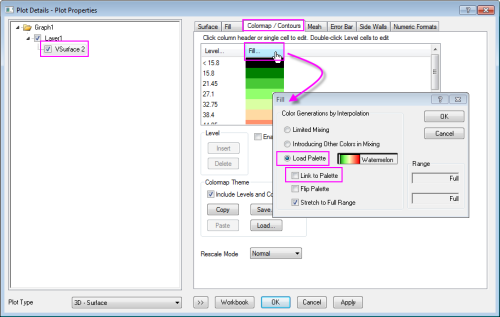

FAQ-832 Wie ändere ich die spezifische Farbe auf der Oberfläche der 3D-Farbabbildung?
how_to_change_the_specify_cplor_in_the_3D_color_map_surface
Letztes Update: 28.06.2016
Wenn Sie die festgelegte Farbe im 3D-Oberflächendiagramm mit Farbabbildung ändern möchten, können Sie die untenstehenden Schritte befolgen:
- Klicken Sie doppelt auf die Zeichnung des 3D-Oberflächendiagramms mit Farbabbildung, um den Dialog Details Zeichnung zu öffnen, und gehen Sie zur Registerkarte Farbabbildung/Kontur.
- Klicken Sie auf die Überschrift Füllung, um den Dialog Füllung zu öffnen, und wählen Sie dann die Option Palette laden.
- Deaktivieren Sie das Kontrollkästchen Mit Palette verknüpfen.
- 
| Hinweis: Wenn Sie dieses Kontrollkästchen aktivieren, um die Farbfüllung mit der ausgewählten Palette zu verknüpfen, wird das Bearbeiten der einzelnen Farbe durch einen Klick in der Spalte Füllung deaktiviert. |
- Klicken Sie auf OK und kehren Sie zum Dialog Details Zeichnung zurück. Sie können dann auf eine einzelne Farbe in der Spalte Füllung klicken und die Farbe im aufgerufenen Dialog ändern.
Schlüsselwörter:3D-Oberfläche mit Farbabbildung, Farbabbildung, Füllfarbe